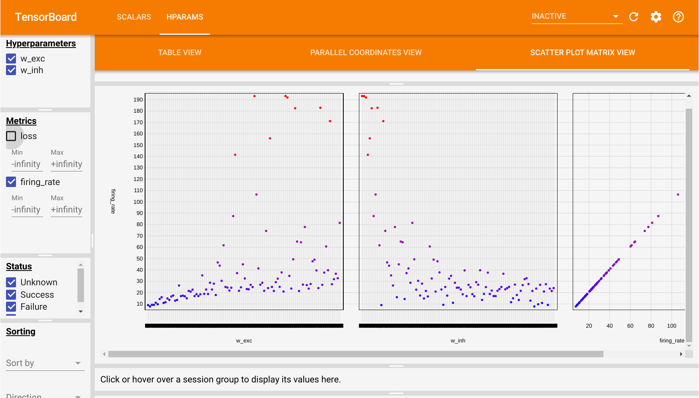

#!pip install ANNarchyHyperparameter optimization


Most of the work in computational neuroscience is to guess the values of parameters which are not constrained by the biology. The most basic approach is to simply try out different values, run the simulation, reason about why the results are not what you want, change some parameters, run again, etc. It is very easy to get lost in this process and it requires a great deal of intuition about how the model works.
If you are able to define an objective function for your model (a single number that tells how well your model performs), you can use search algorithms to find this hyperparameters automatically, at the cost of running your model multiple times.
Let’s take the example of a rate-coded model depending on two hyperparameters a and b, where is the objective is to have a minimal activity after 1 s of simulation (dummy example):
net = MyNetwork()
net.compile()
def run(a, b):
net.pop.a = a
net.pop.b = b
net.simulate(1000.)
return (net.pop.r)**2Grid search would iterate over all possible values of the parameters to perform the search:
min_loss = 1000.
for a in np.linspace(0.0, 1.0, 100):
for b in np.linspace(0.0, 1.0, 100):
loss = run(a, b)
if loss < min_loss:
min_loss = loss
a_best = a ; b_best = bIf you try 100 values for each parameters, you need 10000 simulations to find your parameters. The number of simulations explodes with the number of free parameters. Moreover, you cannot stop the search before the end, as you could miss the interesting region.
Random search samples blindly values for the hyperparameters:
min_loss = 1000.
for _ in range(1000):
a = np.random.uniform(0.0, 1.0)
b = np.random.uniform(0.0, 1.0)
loss = run(a, b)
if loss < min_loss:
min_loss = loss
a_best = a ; b_best = bIf you are lucky, you may find a good solution quite early in the search, so you can stop it when the loss is below a desired threshold. The main drawback is that the search may spend a lot of time in uninteresting regions: it does not learn anything between two samples.
An often much more efficient search method is Bayesian optimization (also called sequential model-based optimization - SMBO). It is a form of random search that updates beliefs on the hyperparameters. In short, if some parameter values do not lead to good values of the objective function in early samples, they will not be used in later samples. The search becomes more and more focused on the interesting regions of the hyperparameter space.
As always with Python, there are many libraries for that, including:
hyperopthttps://github.com/hyperopt/hyperoptoptunahttps://github.com/pfnet/optunatalos(for keras models) https://github.com/autonomio/talos
This notebook demonstrates how to use hyperopt to find some hyperparameters of the COBA models already included in the ANNarchy examples:
https://annarchy.github.io/notebooks/COBA.html
Additionally, we will use the tensorboard extension to visualize the dependency between the parameters and the objective function.
import numpy as np
import ANNarchy as ann
from ANNarchy.extensions.tensorboard import LoggerANNarchy 5.0 (5.0.0) on linux (posix).COBA = ann.Neuron(
parameters = dict(
El = -60.0 ,
Vr = -60.0 ,
Erev_exc = 0.0 ,
Erev_inh = -80.0 ,
Vt = -50.0 ,
tau = 20.0 ,
tau_exc = 5.0 ,
tau_inh = 10.0 ,
I = 20.0 ,
),
equations = [
'tau * dv/dt = (El - v) + g_exc * (Erev_exc - v) + g_inh * (Erev_inh - v ) + I',
'tau_exc * dg_exc/dt = - g_exc',
'tau_inh * dg_inh/dt = - g_inh',
],
spike = "v > Vt",
reset = "v = Vr",
refractory = 5.0
)
class COBANetwork (ann.Network):
def __init__(self, w_exc:float = 0.6, w_inh:float = 6.7):
self.P = self.create(geometry=4000, neuron=COBA)
self.P.v = ann.Normal(-55.0, 5.0)
self.P.g_exc = ann.Normal(4.0, 1.5)
self.P.g_inh = ann.Normal(20.0, 12.0)
self.Ce = self.connect(pre=self.P[:3200], post=self.P, target='exc')
self.Ce.fixed_probability(weights=w_exc, probability=0.02)
self.Ci = self.connect(pre=self.P[3200:], post=self.P, target='inh')
self.Ci.fixed_probability(weights=w_inh, probability=0.02)
self.m = self.monitor(self.P, ['spike'])
net = COBANetwork(w_exc=0.6, w_inh=6.7, dt=0.1)
net.compile()Compiling network 1... OK With the default parameters, the COBA network fires at around 20 Hz:
net.simulate(1000.0)
data = net.m.get('spike')
fr = net.m.mean_fr(data)
print("Firing rate:", fr)Firing rate: 21.899Let’s suppose we now want the network to fire at 30 Hz. Which parameters should we change to obtain that value?
Many parameters might influence the firing rate of the network (if not all). Here, we make the assumption that the weight values for the excitatory connections (0.6) and inhibitory ones (6.7) are the most critical ones.
Let’s start by importing hyperopt (after installing it with pip install hyperopt):
from hyperopt import fmin, tpe, hp, STATUS_OKWe define a trial() method taking values for the two hyperparameters as inputs. It starts by resetting the network, sets the excitatory and inhibitory weights to the desired value, simulates for one second, computes the mean firing rate of the population, logs the parameters and finally returns the objective function: the squared error between the recorded firing rate and 30 Hz.
logger = Logger()
def trial(args):
# Retrieve the parameters
w_exc = args[0]
w_inh = args[1]
# Create the network as a copy of net with different parameters (avoids recompilation)
new_net = net.copy(w_exc, w_inh)
# Simulate 1 second
new_net.simulate(1000.0)
# Retrieve the spike recordings
spikes = new_net.m.get('spike')
# Compute the population firing rate
fr = new_net.m.mean_fr(spikes)
# Compute a quadratic loss around 30 Hz
loss = 0.001 * (fr - 30.0)**2
# Log the parameters
logger.add_parameters({'w_exc': w_exc, 'w_inh': w_inh},
{'loss': loss, 'firing_rate': fr})
# Delete the network to avoid memory leak
new_net.clear()
return {
'loss': loss,
'status': STATUS_OK,
# -- store other results like this
'fr': fr,
}Logging in runs/Jan05_14-16-09_stand-pcWe can check that the default parameters indeed lead to a firing rate of 20 Hz:
trial([0.6, 6.7]){'loss': 0.05009454506250008, 'status': 'ok', 'fr': 22.922249999999995}We can now use hyperopt to find the hyperparameters making the network fire at 30 Hz.
The fmin() function takes:
fn: the objective function for a set of parameters.space: the search space for the hyperparameters (the prior).algo: which algorithm to use, either tpe.suggest or random.suggestmax_evals: number of samples (simulations) to make.
Here, we will sample the excitatory weights between 0.1 and 1, the inhibitory ones between 1 and 10. Of course, the smaller the range, the better. Refer to the doc of hyperopt for other sampling priors.
best = fmin(
fn=trial,
space=[
hp.uniform('w_exc', 0.1, 1.0),
hp.uniform('w_inh', 1.0, 10.0)
],
algo=tpe.suggest,
max_evals=100)
print(best) 0%| | 0/100 [00:00<?, ?trial/s, best loss=?] 1%|▍ | 1/100 [00:00<00:57, 1.74trial/s, best loss: 0.09885330625000005] 2%|▉ | 2/100 [00:01<01:00, 1.62trial/s, best loss: 0.08827542024999997] 3%|█▍ | 3/100 [00:01<00:55, 1.74trial/s, best loss: 0.08827542024999997] 4%|█▊ | 4/100 [00:02<00:53, 1.79trial/s, best loss: 0.08827542024999997] 5%|██▎ | 5/100 [00:02<00:53, 1.78trial/s, best loss: 0.029073664000000034] 6%|██▋ | 6/100 [00:03<01:01, 1.53trial/s, best loss: 0.029073664000000034] 7%|███▏ | 7/100 [00:04<01:01, 1.51trial/s, best loss: 0.029073664000000034] 8%|███▌ | 8/100 [00:04<00:58, 1.57trial/s, best loss: 0.0033507302500000156] 9%|███▉ | 9/100 [00:05<00:59, 1.53trial/s, best loss: 0.0033507302500000156] 10%|████▎ | 10/100 [00:06<00:57, 1.56trial/s, best loss: 0.0033507302500000156] 11%|████▋ | 11/100 [00:06<00:55, 1.61trial/s, best loss: 0.0033507302500000156] 12%|█████▏ | 12/100 [00:07<00:53, 1.64trial/s, best loss: 0.0033507302500000156] 13%|█████▌ | 13/100 [00:07<00:52, 1.66trial/s, best loss: 0.0033507302500000156] 14%|██████ | 14/100 [00:08<00:52, 1.65trial/s, best loss: 0.0033507302500000156] 15%|██████▍ | 15/100 [00:09<00:51, 1.66trial/s, best loss: 0.0033507302500000156] 16%|███████ | 16/100 [00:09<00:51, 1.63trial/s, best loss: 0.002507472250000014] 17%|███████▏ | 17/100 [00:10<00:52, 1.57trial/s, best loss: 0.00010192056250000016] 18%|███████▌ | 18/100 [00:11<00:52, 1.57trial/s, best loss: 0.00010192056250000016] 19%|███████▉ | 19/100 [00:11<00:49, 1.62trial/s, best loss: 0.00010192056250000016] 20%|████████▍ | 20/100 [00:12<00:47, 1.68trial/s, best loss: 0.00010192056250000016] 21%|████████▊ | 21/100 [00:13<00:53, 1.48trial/s, best loss: 0.00010192056250000016] 22%|█████████▏ | 22/100 [00:13<00:52, 1.48trial/s, best loss: 0.00010192056250000016] 23%|█████████▋ | 23/100 [00:14<00:50, 1.52trial/s, best loss: 0.00010192056250000016] 24%|██████████ | 24/100 [00:15<00:55, 1.36trial/s, best loss: 0.00010192056250000016] 25%|██████████▌ | 25/100 [00:16<01:00, 1.24trial/s, best loss: 0.00010192056250000016] 26%|██████████▉ | 26/100 [00:16<00:56, 1.31trial/s, best loss: 0.00010192056250000016] 27%|███████████▎ | 27/100 [00:17<00:54, 1.35trial/s, best loss: 0.00010192056250000016] 28%|███████████▊ | 28/100 [00:18<00:53, 1.35trial/s, best loss: 0.00010192056250000016] 29%|████████████▏ | 29/100 [00:19<00:51, 1.37trial/s, best loss: 0.00010192056250000016] 30%|████████████▌ | 30/100 [00:20<00:56, 1.24trial/s, best loss: 0.00010192056250000016] 31%|█████████████ | 31/100 [00:20<00:51, 1.33trial/s, best loss: 0.00010192056250000016] 32%|█████████████▍ | 32/100 [00:21<00:47, 1.44trial/s, best loss: 0.00010192056250000016] 33%|█████████████▊ | 33/100 [00:22<00:47, 1.43trial/s, best loss: 0.00010192056250000016] 34%|██████████████▎ | 34/100 [00:22<00:44, 1.48trial/s, best loss: 0.00010192056250000016] 35%|██████████████▋ | 35/100 [00:23<00:40, 1.59trial/s, best loss: 0.00010192056250000016] 36%|███████████████ | 36/100 [00:23<00:42, 1.52trial/s, best loss: 0.00010192056250000016] 37%|███████████████▌ | 37/100 [00:24<00:40, 1.55trial/s, best loss: 0.00010192056250000016] 38%|███████████████▉ | 38/100 [00:25<00:40, 1.53trial/s, best loss: 0.00010192056250000016] 39%|████████████████▍ | 39/100 [00:25<00:39, 1.53trial/s, best loss: 0.00010192056250000016] 40%|████████████████▊ | 40/100 [00:26<00:45, 1.33trial/s, best loss: 0.00010192056250000016] 41%|█████████████████▏ | 41/100 [00:27<00:42, 1.40trial/s, best loss: 0.00010192056250000016] 42%|█████████████████▋ | 42/100 [00:28<00:42, 1.37trial/s, best loss: 0.00010192056250000016] 43%|██████████████████ | 43/100 [00:28<00:39, 1.45trial/s, best loss: 0.00010192056250000016] 44%|██████████████████▍ | 44/100 [00:29<00:37, 1.50trial/s, best loss: 0.00010192056250000016] 45%|██████████████████▉ | 45/100 [00:30<00:35, 1.53trial/s, best loss: 0.00010192056250000016] 46%|███████████████████▎ | 46/100 [00:30<00:36, 1.50trial/s, best loss: 0.00010192056250000016] 47%|███████████████████▋ | 47/100 [00:31<00:35, 1.51trial/s, best loss: 0.00010192056250000016] 48%|████████████████████▏ | 48/100 [00:32<00:34, 1.52trial/s, best loss: 0.00010192056250000016] 49%|████████████████████▌ | 49/100 [00:32<00:33, 1.53trial/s, best loss: 0.00010192056250000016] 50%|█████████████████████ | 50/100 [00:33<00:33, 1.51trial/s, best loss: 0.00010192056250000016] 51%|█████████████████████▍ | 51/100 [00:33<00:32, 1.53trial/s, best loss: 0.00010192056250000016] 52%|█████████████████████▊ | 52/100 [00:34<00:32, 1.46trial/s, best loss: 0.00010192056250000016] 53%|██████████████████████▎ | 53/100 [00:35<00:33, 1.41trial/s, best loss: 0.00010192056250000016] 54%|██████████████████████▋ | 54/100 [00:36<00:31, 1.48trial/s, best loss: 0.00010192056250000016] 55%|███████████████████████ | 55/100 [00:36<00:29, 1.51trial/s, best loss: 0.00010192056250000016] 56%|███████████████████████▌ | 56/100 [00:37<00:28, 1.55trial/s, best loss: 0.00010192056250000016] 57%|███████████████████████▉ | 57/100 [00:38<00:28, 1.48trial/s, best loss: 0.00010192056250000016] 58%|████████████████████████▎ | 58/100 [00:38<00:27, 1.51trial/s, best loss: 0.00010192056250000016] 59%|████████████████████████▊ | 59/100 [00:39<00:27, 1.52trial/s, best loss: 0.00010192056250000016] 60%|█████████████████████████▏ | 60/100 [00:39<00:25, 1.56trial/s, best loss: 0.00010192056250000016] 61%|█████████████████████████▌ | 61/100 [00:40<00:25, 1.53trial/s, best loss: 0.00010192056250000016] 62%|██████████████████████████ | 62/100 [00:41<00:29, 1.29trial/s, best loss: 0.00010192056250000016] 63%|██████████████████████████▍ | 63/100 [00:42<00:31, 1.16trial/s, best loss: 0.00010192056250000016] 64%|██████████████████████████▉ | 64/100 [00:43<00:29, 1.21trial/s, best loss: 0.00010192056250000016] 65%|███████████████████████████▎ | 65/100 [00:44<00:27, 1.26trial/s, best loss: 0.00010192056250000016] 66%|███████████████████████████▋ | 66/100 [00:44<00:26, 1.30trial/s, best loss: 0.00010192056250000016] 67%|████████████████████████████▏ | 67/100 [00:45<00:24, 1.34trial/s, best loss: 0.00010192056250000016] 68%|████████████████████████████▌ | 68/100 [00:46<00:22, 1.41trial/s, best loss: 0.00010192056250000016] 69%|████████████████████████████▉ | 69/100 [00:46<00:21, 1.44trial/s, best loss: 0.00010192056250000016] 70%|█████████████████████████████▍ | 70/100 [00:47<00:20, 1.47trial/s, best loss: 0.00010192056250000016] 71%|█████████████████████████████▊ | 71/100 [00:48<00:20, 1.44trial/s, best loss: 0.00010192056250000016] 72%|██████████████████████████████▏ | 72/100 [00:48<00:19, 1.47trial/s, best loss: 0.00010192056250000016] 73%|██████████████████████████████▋ | 73/100 [00:49<00:18, 1.47trial/s, best loss: 0.00010192056250000016] 74%|███████████████████████████████ | 74/100 [00:50<00:17, 1.48trial/s, best loss: 0.00010192056250000016] 75%|███████████████████████████████▌ | 75/100 [00:50<00:17, 1.46trial/s, best loss: 0.00010192056250000016] 76%|███████████████████████████████▉ | 76/100 [00:51<00:16, 1.42trial/s, best loss: 0.00010192056250000016] 77%|████████████████████████████████▎ | 77/100 [00:52<00:15, 1.49trial/s, best loss: 0.00010192056250000016] 78%|████████████████████████████████▊ | 78/100 [00:52<00:14, 1.56trial/s, best loss: 0.00010192056250000016] 79%|█████████████████████████████████▏ | 79/100 [00:53<00:13, 1.53trial/s, best loss: 0.00010192056250000016] 80%|█████████████████████████████████▌ | 80/100 [00:54<00:12, 1.54trial/s, best loss: 0.00010192056250000016] 81%|██████████████████████████████████ | 81/100 [00:54<00:12, 1.50trial/s, best loss: 0.00010192056250000016] 82%|██████████████████████████████████▍ | 82/100 [00:55<00:12, 1.47trial/s, best loss: 0.00010192056250000016] 83%|██████████████████████████████████▊ | 83/100 [00:56<00:11, 1.49trial/s, best loss: 0.00010192056250000016] 84%|███████████████████████████████████▎ | 84/100 [00:57<00:11, 1.40trial/s, best loss: 0.00010192056250000016] 85%|███████████████████████████████████▋ | 85/100 [00:57<00:10, 1.43trial/s, best loss: 0.00010192056250000016] 86%|████████████████████████████████████ | 86/100 [00:58<00:09, 1.48trial/s, best loss: 0.00010192056250000016] 87%|████████████████████████████████████▌ | 87/100 [00:59<00:08, 1.47trial/s, best loss: 0.00010192056250000016] 88%|████████████████████████████████████▉ | 88/100 [00:59<00:08, 1.47trial/s, best loss: 0.00010192056250000016] 89%|█████████████████████████████████████▍ | 89/100 [01:00<00:07, 1.53trial/s, best loss: 0.00010192056250000016] 90%|█████████████████████████████████████▊ | 90/100 [01:00<00:06, 1.54trial/s, best loss: 0.00010192056250000016] 91%|██████████████████████████████████████▏ | 91/100 [01:01<00:05, 1.64trial/s, best loss: 0.00010192056250000016] 92%|██████████████████████████████████████▋ | 92/100 [01:02<00:04, 1.68trial/s, best loss: 0.00010192056250000016] 93%|███████████████████████████████████████ | 93/100 [01:02<00:04, 1.61trial/s, best loss: 0.00010192056250000016] 94%|███████████████████████████████████████▍ | 94/100 [01:03<00:03, 1.52trial/s, best loss: 0.00010192056250000016] 95%|███████████████████████████████████████▉ | 95/100 [01:04<00:03, 1.56trial/s, best loss: 0.00010192056250000016] 96%|████████████████████████████████████████▎ | 96/100 [01:04<00:02, 1.51trial/s, best loss: 0.00010192056250000016] 97%|████████████████████████████████████████▋ | 97/100 [01:05<00:01, 1.52trial/s, best loss: 0.00010192056250000016] 98%|█████████████████████████████████████████▏| 98/100 [01:06<00:01, 1.49trial/s, best loss: 0.00010192056250000016] 99%|█████████████████████████████████████████▌| 99/100 [01:06<00:00, 1.51trial/s, best loss: 0.00010192056250000016]100%|█████████████████████████████████████████| 100/100 [01:07<00:00, 1.53trial/s, best loss: 0.00010192056250000016]100%|█████████████████████████████████████████| 100/100 [01:07<00:00, 1.48trial/s, best loss: 0.00010192056250000016]
{'w_exc': np.float64(0.7470025888585744), 'w_inh': np.float64(6.142792468570135)}After 100 simulations, hyperopt returns a set of hyperparameter values that make the network fire at 30Hz. We can check that it is true with:
trial([best['w_exc'], best['w_inh']]){'loss': 0.004291112250000001, 'status': 'ok', 'fr': 27.9285}There are plenty of options to hyperopt (check Trials or the parallel search using MongoDB), but this simple example should get you started.
